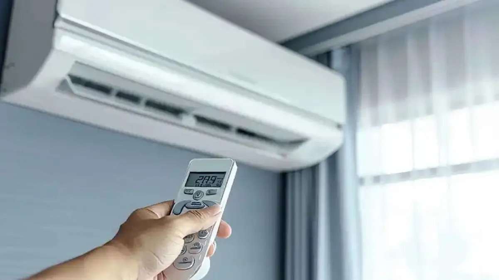
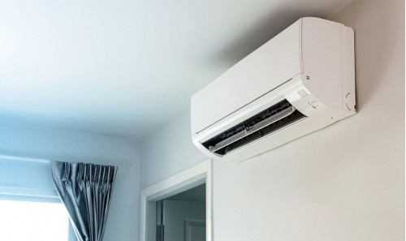
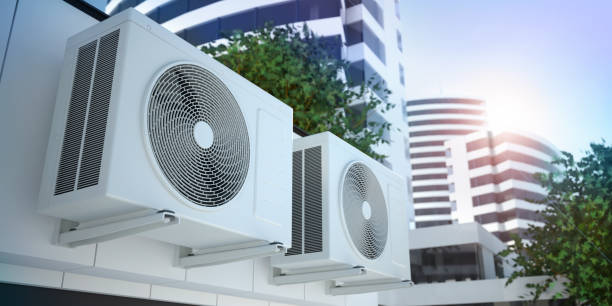
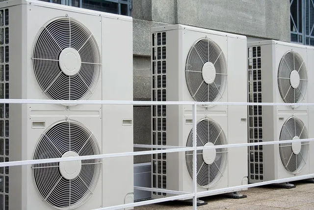

<div class="ourJob p-md-5 p-3">
    <div class="container d-flex justify-content-center flex-column align-items-center gap-4">
        <div class="title text-start text-md-center w-100 pt-3 pt-md-0">
            <h1 class="fw-bold">Nuestro trabajo</h1>
        </div>
        <div class="text-center">
            <div class="d-flex justify-content-center text-start text-md-center text-container">
                    <p><strong>Conforzone Eficiencias</strong> es una empresa especializada en la instalación de sistemas de calefacción y aire acondicionado de alta calidad y eficiencia energética. Nuestro objetivo es brindar confort y bienestar a nuestros clientes,
                        siempre utilizando las últimas tecnologías y ofreciendo un servicio personalizado y de confianza. Confía en nosotros para mantener tu hogar o negocio en la temperatura perfecta durante todo el año.
                    </p>
            </div>
            <div class="row mt-4 text-start">
                <div class="col-md-3 py-2 py-md-0">
                    
                    <p class="py-2">El aire acondicionado residencial es una
                        excelente opción para mantener un
                        ambiente fresco y confortable en el hogar
                        durante los días calurosos del verano.
                    </p>
                </div>
                <div class="col-md-3 py-2 py-md-0">
                    
                    <p class="py-2">Los sistemas de refrigeración comercial
                        son fundamentales en la industria
                        alimentaria para mantener los productos
                        frescos y seguros para el consumo.</p>
                </div>
                <div class="col-md-3 py-2 py-md-0">
                    
                    <p class="py-2">La instalación profesional de sistemas de refrigeración comercial asegura un rendimiento óptimo y una mayor eficiencia energética, reduciendo costes operativos.</p>
                </div>
                <div class="col-md-3 py-2 py-md-0">
                    
                    <p class="py-2">Es importante realizar un adecuado
                        mantenimiento de los equipos para garantizar su
                        correcto funcionamiento y prolongar su vida
                        útil.</p>
                </div>
            </div>
        </div>
    </div>
</div>